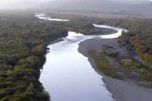

Карпатський національний природний парк
Заповідник створено у 1968 р. Із метою збереження типових природних комплексів високогірного ландшафту Карпат та охороні й відновлення в них цінних, рідких і зникаючих видів рослин і тварин.На території заповідника знаходяться найвищі в Карпатах вершини гір Говерли (2056 м), Петроса (2028 м), Попа Івана (2016 м) та ін. Всі ці гори входять до системи хребта Чорногора, який вважається одним з красивіших в радянських Карпатах.
Саме тут добре виявлено субальпійську і навіть альпійську смуги рослинності. Перша представлена в основному заростями гірської с осіни (жерепа), що чергуються й барвистими гірськими луками (полонинами), кам'яними розсипами та стрімкими потоками.На полонинах і в альпійській смузі зростає чимало реліктових і ендемічних рослин, що являють великий науковий інтерес і мають неабияке естетичне значення.
Яскраві плями утворюють, зокрема, різні види тирлича, зарості рододендрона східнокарпатського та ін. Цікаві також реліктові види первоцвіту, ендемічний аконіт чорногорський) ломикамінь карпатський, дзвоники карпатські, волошка карпатська та багато (більше ЗО) інших ендемів і реліктів. Нижче субальпійської смуги схили гір хребта Чорногори (вкриті в основному ялиновими лісами..
Ми знаходимось тут
Події
Галерея
- 

Посилання
Ви можете знайти нас тут
- https://www.facebook.com/oleh.sam